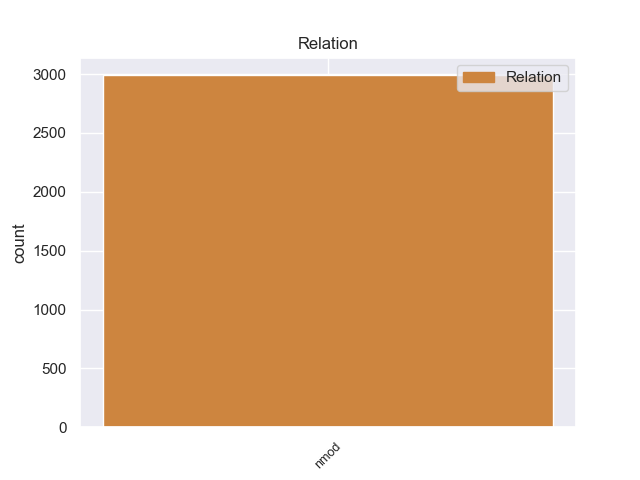
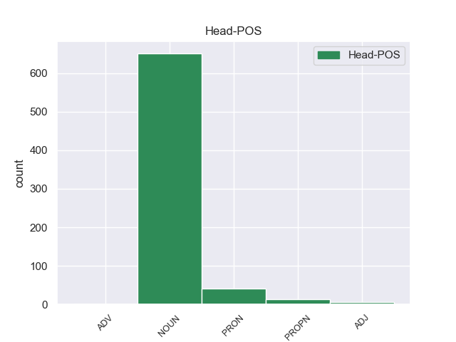
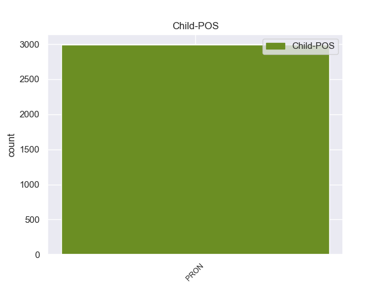

Distribution of features within this leaf



Morphosyntax Rules sorted by frequency.
- When the dependent token is the case marking(case) of the head token, and the head token is NOUN and the dependent token is PRON, the Case needs to be Nom.
1 उनका _ _ _ _ 0 _ _ _
2 कहना _ _ _ _ 0 _ _ _
3 है _ _ _ _ 0 _ _ _
4 कि _ _ _ _ 0 _ _ _
5 छोटे _ _ _ _ 0 _ _ _
6 शहरों _ _ _ _ 0 _ _ _
7 व _ _ _ _ 0 _ _ _
8 गाँवों _ _ _ _ 0 _ _ _
9 में _ _ _ _ 0 _ _ _
10 रहने _ _ _ _ 0 _ _ _
11 वाले _ _ _ _ 0 _ _ _
12 लोगों _ _ _ _ 0 _ _ _
13 को _ _ _ _ 0 _ _ _
14 ट्रेन _ _ _ _ 0 _ _ _
15 के _ _ _ _ 0 _ _ _
16 जरिये _ _ _ _ 0 _ _ _
17 पर्यटन _ _ _ _ 0 _ _ _
18 की _ _ _ _ 0 _ _ _
19 कोई कोई PRON PRP Case=Nom|Number=Sing|Person=3|PronType=Prs 20 case _ ChunkId=NP7|ChunkType=child|Tam=0|Translit=koī|Vib=0
20 सुविधा सुविधा NOUN NN Case=Nom|Gender=Fem|Number=Sing|Person=3 0 _ _ _
21 नहीं _ _ _ _ 0 _ _ _
22 मिलती _ _ _ _ 0 _ _ _
23 । _ _ _ _ 0 _ _ _
1 कांग्रेस _ _ _ _ 0 _ _ _
2 ने _ _ _ _ 0 _ _ _
3 गांधी _ _ _ _ 0 _ _ _
4 के _ _ _ _ 0 _ _ _
5 साथ _ _ _ _ 0 _ _ _
6 अपने _ _ _ _ 0 _ _ _
7 रिश्ते _ _ _ _ 0 _ _ _
8 को _ _ _ _ 0 _ _ _
9 मजबूत _ _ _ _ 0 _ _ _
10 करने _ _ _ _ 0 _ _ _
11 में _ _ _ _ 0 _ _ _
12 कोई कोई PRON PRP Case=Nom|Number=Sing|Person=3|PronType=Prs 13 mark _ ChunkId=NP5|ChunkType=child|Tam=0|Translit=koī|Vib=0
13 कसर कसर NOUN NN Case=Nom|Gender=Fem|Number=Sing|Person=3 0 _ _ _
14 नहीं _ _ _ _ 0 _ _ _
15 छोड़ी _ _ _ _ 0 _ _ _
16 । _ _ _ _ 0 _ _ _
1 कांग्रेस _ _ _ _ 0 _ _ _
2 का _ _ _ _ 0 _ _ _
3 कहना _ _ _ _ 0 _ _ _
4 है _ _ _ _ 0 _ _ _
5 कि _ _ _ _ 0 _ _ _
6 क्षेत्रीय _ _ _ _ 0 _ _ _
7 राजनीति _ _ _ _ 0 _ _ _
8 के _ _ _ _ 0 _ _ _
9 तहत _ _ _ _ 0 _ _ _
10 बिहार _ _ _ _ 0 _ _ _
11 के _ _ _ _ 0 _ _ _
12 दोनों _ _ _ _ 0 _ _ _
13 केंद्रीय _ _ _ _ 0 _ _ _
14 मंत्रियों _ _ _ _ 0 _ _ _
15 द्वारा _ _ _ _ 0 _ _ _
16 एक एक PRON PRPC Case=Nom|Number=Sing|Person=3|PronType=Prs 17 case _ ChunkId=NP5|ChunkType=child|Tam=0|Translit=eka|Vib=0
17 दूसरे दूसरा PRON PRP Case=Acc|Number=Sing|Person=3|PronType=Prs 0 _ _ _
18 के _ _ _ _ 0 _ _ _
19 खिलाफ _ _ _ _ 0 _ _ _
20 आरोप _ _ _ _ 0 _ _ _
21 - _ _ _ _ 0 _ _ _
22 प्रत्यारोप _ _ _ _ 0 _ _ _
23 लगाने _ _ _ _ 0 _ _ _
24 के _ _ _ _ 0 _ _ _
25 कारण _ _ _ _ 0 _ _ _
26 मनमोहन _ _ _ _ 0 _ _ _
27 सरकार _ _ _ _ 0 _ _ _
28 की _ _ _ _ 0 _ _ _
29 छवि _ _ _ _ 0 _ _ _
30 पर _ _ _ _ 0 _ _ _
31 खराब _ _ _ _ 0 _ _ _
32 असर _ _ _ _ 0 _ _ _
33 पड़ _ _ _ _ 0 _ _ _
34 रहा _ _ _ _ 0 _ _ _
35 है _ _ _ _ 0 _ _ _
36 । _ _ _ _ 0 _ _ _
1 शरीफ _ _ _ _ 0 _ _ _
2 ने _ _ _ _ 0 _ _ _
3 कहा _ _ _ _ 0 _ _ _
4 कि _ _ _ _ 0 _ _ _
5 ऐसा _ _ _ _ 0 _ _ _
6 कोई कोई PRON PRP Case=Nom|Number=Sing|Person=3|PronType=Prs 8 det _ ChunkId=NP2|ChunkType=child|Tam=0|Translit=koī|Vib=0
7 भी _ _ _ _ 0 _ _ _
8 कदम कदम NOUN NN Case=Nom|Gender=Masc|Number=Sing|Person=3 0 _ _ _
9 लोकतांत्रिक _ _ _ _ 0 _ _ _
10 पाकिस्तान _ _ _ _ 0 _ _ _
11 के _ _ _ _ 0 _ _ _
12 लिए _ _ _ _ 0 _ _ _
13 उनके _ _ _ _ 0 _ _ _
14 छह _ _ _ _ 0 _ _ _
15 वर्ष _ _ _ _ 0 _ _ _
16 लंबे _ _ _ _ 0 _ _ _
17 संघर्ष _ _ _ _ 0 _ _ _
18 पर _ _ _ _ 0 _ _ _
19 पानी _ _ _ _ 0 _ _ _
20 फेर _ _ _ _ 0 _ _ _
21 देगा _ _ _ _ 0 _ _ _
22 । _ _ _ _ 0 _ _ _
1 मंत्रालय _ _ _ _ 0 _ _ _
2 में _ _ _ _ 0 _ _ _
3 इस _ _ _ _ 0 _ _ _
4 रिपोर्ट _ _ _ _ 0 _ _ _
5 पर _ _ _ _ 0 _ _ _
6 विचार _ _ _ _ 0 _ _ _
7 - _ _ _ _ 0 _ _ _
8 विमर्श _ _ _ _ 0 _ _ _
9 चल _ _ _ _ 0 _ _ _
10 रहा _ _ _ _ 0 _ _ _
11 है _ _ _ _ 0 _ _ _
12 और _ _ _ _ 0 _ _ _
13 जल्द _ _ _ _ 0 _ _ _
14 ही _ _ _ _ 0 _ _ _
15 कोई कोई PRON PRP Case=Nom|Number=Sing|Person=3|PronType=Prs 16 dep _ ChunkId=NP4|ChunkType=child|Tam=0|Translit=koī|Vib=0
16 निर्णय निर्णय NOUN NN Case=Nom|Gender=Masc|Number=Sing|Person=3 0 _ _ _
17 ले _ _ _ _ 0 _ _ _
18 लिया _ _ _ _ 0 _ _ _
19 जाएगा _ _ _ _ 0 _ _ _
20 । _ _ _ _ 0 _ _ _
1 एक _ _ _ _ 0 _ _ _
2 अन्य _ _ _ _ 0 _ _ _
3 व्यवसायी _ _ _ _ 0 _ _ _
4 वैष्णव _ _ _ _ 0 _ _ _
5 जैन _ _ _ _ 0 _ _ _
6 भी _ _ _ _ 0 _ _ _
7 जब _ _ _ _ 0 _ _ _
8 कभी _ _ _ _ 0 _ _ _
9 नया _ _ _ _ 0 _ _ _
10 व्यापार _ _ _ _ 0 _ _ _
11 शुरू _ _ _ _ 0 _ _ _
12 करते _ _ _ _ 0 _ _ _
13 हैं _ _ _ _ 0 _ _ _
14 अथवा _ _ _ _ 0 _ _ _
15 कोई कोई PRON PRP Case=Nom|Number=Sing|Person=3|PronType=Prs 17 cc _ ChunkId=NP7|ChunkType=child|Tam=0|Translit=koī|Vib=0
16 नई _ _ _ _ 0 _ _ _
17 नियुक्ति नियुक्ति NOUN NN Case=Nom|Gender=Fem|Number=Sing|Person=3 0 _ _ _
18 करते _ _ _ _ 0 _ _ _
19 हैं _ _ _ _ 0 _ _ _
20 तो _ _ _ _ 0 _ _ _
21 वह _ _ _ _ 0 _ _ _
22 पूरी _ _ _ _ 0 _ _ _
23 तरह _ _ _ _ 0 _ _ _
24 ज्योतिष _ _ _ _ 0 _ _ _
25 पर _ _ _ _ 0 _ _ _
26 ही _ _ _ _ 0 _ _ _
27 निर्भर _ _ _ _ 0 _ _ _
28 रहते _ _ _ _ 0 _ _ _
29 हैं _ _ _ _ 0 _ _ _
30 । _ _ _ _ 0 _ _ _
1 डीपीजी _ _ _ _ 0 _ _ _
2 की _ _ _ _ 0 _ _ _
3 राधा _ _ _ _ 0 _ _ _
4 कुमार _ _ _ _ 0 _ _ _
5 ने _ _ _ _ 0 _ _ _
6 कहा _ _ _ _ 0 _ _ _
7 कि _ _ _ _ 0 _ _ _
8 सम्मेलन _ _ _ _ 0 _ _ _
9 में _ _ _ _ 0 _ _ _
10 कश्मीर _ _ _ _ 0 _ _ _
11 समस्या _ _ _ _ 0 _ _ _
12 के _ _ _ _ 0 _ _ _
13 समाधान _ _ _ _ 0 _ _ _
14 को _ _ _ _ 0 _ _ _
15 लेकर _ _ _ _ 0 _ _ _
16 कोई कोई PRON PRP Case=Nom|Number=Sing|Person=3|PronType=Prs 17 advcl _ ChunkId=NP6|ChunkType=child|Translit=koī
17 चर्चा चर्चा NOUN NN Case=Nom|Gender=Fem|Number=Sing|Person=3 0 _ _ _
18 नहीं _ _ _ _ 0 _ _ _
19 हुई _ _ _ _ 0 _ _ _
20 । _ _ _ _ 0 _ _ _
1 उन्होंने _ _ _ _ 0 _ _ _
2 बताया _ _ _ _ 0 _ _ _
3 कि _ _ _ _ 0 _ _ _
4 पिछले _ _ _ _ 0 _ _ _
5 ३५ _ _ _ _ 0 _ _ _
6 सालों _ _ _ _ 0 _ _ _
7 में _ _ _ _ 0 _ _ _
8 उन्होंने _ _ _ _ 0 _ _ _
9 जो _ _ _ _ 0 _ _ _
10 कुछ _ _ _ _ 0 _ _ _
11 बनाया _ _ _ _ 0 _ _ _
12 था _ _ _ _ 0 _ _ _
13 , _ _ _ _ 0 _ _ _
14 सब सब PRON PRPC Case=Nom|Number=Plur|Person=3|PronType=Prs 15 punct _ ChunkId=NP5|ChunkType=child|Tam=0|Translit=saba|Vib=0
15 कुछ कुछ PRON PRP Case=Nom|Person=3|PronType=Prs 0 _ _ _
16 तूफान _ _ _ _ 0 _ _ _
17 की _ _ _ _ 0 _ _ _
18 भेंट _ _ _ _ 0 _ _ _
19 चढ़ _ _ _ _ 0 _ _ _
20 गया _ _ _ _ 0 _ _ _
21 । _ _ _ _ 0 _ _ _
1 उन्हें _ _ _ _ 0 _ _ _
2 उम्मीद _ _ _ _ 0 _ _ _
3 थी _ _ _ _ 0 _ _ _
4 कि _ _ _ _ 0 _ _ _
5 इस _ _ _ _ 0 _ _ _
6 बैठक _ _ _ _ 0 _ _ _
7 में _ _ _ _ 0 _ _ _
8 पार्टी _ _ _ _ 0 _ _ _
9 का _ _ _ _ 0 _ _ _
10 शीर्ष _ _ _ _ 0 _ _ _
11 नेतृत्व _ _ _ _ 0 _ _ _
12 उन्हें _ _ _ _ 0 _ _ _
13 कोई कोई PRON PRP Case=Nom|Number=Sing|Person=3|PronType=Prs 14 iobj _ ChunkId=NP7|ChunkType=child|Tam=0|Translit=koī|Vib=0
14 दिशा दिशा NOUN NN Case=Nom|Gender=Fem|Number=Sing|Person=3 0 _ _ _
15 देगा _ _ _ _ 0 _ _ _
16 और _ _ _ _ 0 _ _ _
17 विचारधारा _ _ _ _ 0 _ _ _
18 के _ _ _ _ 0 _ _ _
19 स्तर _ _ _ _ 0 _ _ _
20 पर _ _ _ _ 0 _ _ _
21 छह _ _ _ _ 0 _ _ _
22 साल _ _ _ _ 0 _ _ _
23 के _ _ _ _ 0 _ _ _
24 कुहासे _ _ _ _ 0 _ _ _
25 को _ _ _ _ 0 _ _ _
26 छांटने _ _ _ _ 0 _ _ _
27 का _ _ _ _ 0 _ _ _
28 प्रयास _ _ _ _ 0 _ _ _
29 करेगा _ _ _ _ 0 _ _ _
30 । _ _ _ _ 0 _ _ _
1 बहरहाल _ _ _ _ 0 _ _ _
2 , _ _ _ _ 0 _ _ _
3 पार्टी _ _ _ _ 0 _ _ _
4 सूत्रों _ _ _ _ 0 _ _ _
5 के _ _ _ _ 0 _ _ _
6 मुताबिक़ _ _ _ _ 0 _ _ _
7 , _ _ _ _ 0 _ _ _
8 समझा _ _ _ _ 0 _ _ _
9 जाता _ _ _ _ 0 _ _ _
10 है _ _ _ _ 0 _ _ _
11 कि _ _ _ _ 0 _ _ _
12 लगभग _ _ _ _ 0 _ _ _
13 आधे _ _ _ _ 0 _ _ _
14 घंटे _ _ _ _ 0 _ _ _
15 की _ _ _ _ 0 _ _ _
16 मुलाक़ात _ _ _ _ 0 _ _ _
17 में _ _ _ _ 0 _ _ _
18 नक़वी _ _ _ _ 0 _ _ _
19 ने _ _ _ _ 0 _ _ _
20 आडवाणी _ _ _ _ 0 _ _ _
21 को _ _ _ _ 0 _ _ _
22 इस _ _ _ _ 0 _ _ _
23 बात _ _ _ _ 0 _ _ _
24 से _ _ _ _ 0 _ _ _
25 अवगत _ _ _ _ 0 _ _ _
26 कराने _ _ _ _ 0 _ _ _
27 का _ _ _ _ 0 _ _ _
28 प्रयास _ _ _ _ 0 _ _ _
29 किया _ _ _ _ 0 _ _ _
30 कि _ _ _ _ 0 _ _ _
31 वह _ _ _ _ 0 _ _ _
32 अपनी _ _ _ _ 0 _ _ _
33 टिथी _ _ _ _ 0 _ _ _
34 से _ _ _ _ 0 _ _ _
35 ' _ _ _ _ 0 _ _ _
36 कोई कोई PRON PRP Case=Nom|Number=Sing|Person=3|PronType=Prs 37 punct _ ChunkId=NP11|ChunkType=child|Tam=0|Translit=koī|Vib=0
37 विवाद विवाद NOUN NN Case=Nom|Gender=Masc|Number=Sing|Person=3 0 _ _ _
38 अथवा _ _ _ _ 0 _ _ _
39 भ्रांति _ _ _ _ 0 _ _ _
40 पैदा _ _ _ _ 0 _ _ _
41 नहीं _ _ _ _ 0 _ _ _
42 करना _ _ _ _ 0 _ _ _
43 ' _ _ _ _ 0 _ _ _
44 चाहते _ _ _ _ 0 _ _ _
45 थे _ _ _ _ 0 _ _ _
46 ' _ _ _ _ 0 _ _ _
47 और _ _ _ _ 0 _ _ _
48 जो _ _ _ _ 0 _ _ _
49 कुछ _ _ _ _ 0 _ _ _
50 भी _ _ _ _ 0 _ _ _
51 हुआ _ _ _ _ 0 _ _ _
52 वह _ _ _ _ 0 _ _ _
53 बहुत _ _ _ _ 0 _ _ _
54 ही _ _ _ _ 0 _ _ _
55 दुर्भाग्यपूर्ण _ _ _ _ 0 _ _ _
56 है _ _ _ _ 0 _ _ _
57 । _ _ _ _ 0 _ _ _
1 उन्होंने _ _ _ _ 0 _ _ _
2 कहा _ _ _ _ 0 _ _ _
3 कि _ _ _ _ 0 _ _ _
4 इस _ _ _ _ 0 _ _ _
5 समय _ _ _ _ 0 _ _ _
6 मानसून _ _ _ _ 0 _ _ _
7 सामान्य _ _ _ _ 0 _ _ _
8 दिशा _ _ _ _ 0 _ _ _
9 में _ _ _ _ 0 _ _ _
10 सामान्य _ _ _ _ 0 _ _ _
11 गति _ _ _ _ 0 _ _ _
12 से _ _ _ _ 0 _ _ _
13 आगे _ _ _ _ 0 _ _ _
14 बढ़ _ _ _ _ 0 _ _ _
15 रहा _ _ _ _ 0 _ _ _
16 है _ _ _ _ 0 _ _ _
17 और _ _ _ _ 0 _ _ _
18 यदि _ _ _ _ 0 _ _ _
19 सब सब PRON PRPC Case=Nom|Number=Plur|PronType=Prs 20 mark _ ChunkId=NP7|ChunkType=child|Tam=0|Translit=saba|Vib=0
20 कुछ कुछ PRON PRP Case=Nom|Number=Sing|Person=3|PronType=Prs 0 _ _ _
21 इसी _ _ _ _ 0 _ _ _
22 तरह _ _ _ _ 0 _ _ _
23 चलता _ _ _ _ 0 _ _ _
24 रहा _ _ _ _ 0 _ _ _
25 तो _ _ _ _ 0 _ _ _
26 अगले _ _ _ _ 0 _ _ _
27 तीन _ _ _ _ 0 _ _ _
28 - _ _ _ _ 0 _ _ _
29 चार _ _ _ _ 0 _ _ _
30 दिनों _ _ _ _ 0 _ _ _
31 में _ _ _ _ 0 _ _ _
32 दिल्ली _ _ _ _ 0 _ _ _
33 और _ _ _ _ 0 _ _ _
34 उत्तरी _ _ _ _ 0 _ _ _
35 - _ _ _ _ 0 _ _ _
36 पश्चिमी _ _ _ _ 0 _ _ _
37 भारत _ _ _ _ 0 _ _ _
38 के _ _ _ _ 0 _ _ _
39 अन्य _ _ _ _ 0 _ _ _
40 इलाकों _ _ _ _ 0 _ _ _
41 में _ _ _ _ 0 _ _ _
42 मानसून _ _ _ _ 0 _ _ _
43 पहुंच _ _ _ _ 0 _ _ _
44 जाएगा _ _ _ _ 0 _ _ _
45 । _ _ _ _ 0 _ _ _
1 विधानसभा _ _ _ _ 0 _ _ _
2 भंग _ _ _ _ 0 _ _ _
3 करने _ _ _ _ 0 _ _ _
4 की _ _ _ _ 0 _ _ _
5 बूटा _ _ _ _ 0 _ _ _
6 सिंह _ _ _ _ 0 _ _ _
7 की _ _ _ _ 0 _ _ _
8 सिफारिशों _ _ _ _ 0 _ _ _
9 के _ _ _ _ 0 _ _ _
10 आधार _ _ _ _ 0 _ _ _
11 के _ _ _ _ 0 _ _ _
12 बारे _ _ _ _ 0 _ _ _
13 में _ _ _ _ 0 _ _ _
14 खंडपीठ _ _ _ _ 0 _ _ _
15 द्वारा _ _ _ _ 0 _ _ _
16 पूछे _ _ _ _ 0 _ _ _
17 जाने _ _ _ _ 0 _ _ _
18 पर _ _ _ _ 0 _ _ _
19 उन्होंने _ _ _ _ 0 _ _ _
20 कहा _ _ _ _ 0 _ _ _
21 कि _ _ _ _ 0 _ _ _
22 जब _ _ _ _ 0 _ _ _
23 संवैधानिक _ _ _ _ 0 _ _ _
24 पद _ _ _ _ 0 _ _ _
25 पर _ _ _ _ 0 _ _ _
26 बैठा _ _ _ _ 0 _ _ _
27 कोई कोई PRON PRP Case=Nom|Number=Sing|Person=3|PronType=Prs 28 acl _ ChunkId=NP10|ChunkType=child|Tam=0|Translit=koī|Vib=0
28 व्यक्ति व्यक्ति NOUN NN Case=Nom|Gender=Masc|Number=Sing|Person=3 0 _ _ _
29 कोई _ _ _ _ 0 _ _ _
30 निर्णय _ _ _ _ 0 _ _ _
31 लेता _ _ _ _ 0 _ _ _
32 है _ _ _ _ 0 _ _ _
33 तो _ _ _ _ 0 _ _ _
34 यह _ _ _ _ 0 _ _ _
35 माना _ _ _ _ 0 _ _ _
36 जाता _ _ _ _ 0 _ _ _
37 है _ _ _ _ 0 _ _ _
38 कि _ _ _ _ 0 _ _ _
39 इसके _ _ _ _ 0 _ _ _
40 कुछ _ _ _ _ 0 _ _ _
41 आधार _ _ _ _ 0 _ _ _
42 रहें _ _ _ _ 0 _ _ _
43 होंगे _ _ _ _ 0 _ _ _
44 । _ _ _ _ 0 _ _ _
1 विपक्षी _ _ _ _ 0 _ _ _
2 पार्टियां _ _ _ _ 0 _ _ _
3 दोनों _ _ _ _ 0 _ _ _
4 केंद्रीय _ _ _ _ 0 _ _ _
5 नेताओं _ _ _ _ 0 _ _ _
6 को _ _ _ _ 0 _ _ _
7 मंत्रिमंडल _ _ _ _ 0 _ _ _
8 से _ _ _ _ 0 _ _ _
9 हटा _ _ _ _ 0 _ _ _
10 कर _ _ _ _ 0 _ _ _
11 एक एक PRON PRPC Case=Nom|Number=Sing|Person=3|PronType=Prs 12 aux _ ChunkId=NP4|ChunkType=child|Tam=0|Translit=eka|Vib=0
12 दूसरे दूसरा PRON PRP Case=Acc|Number=Sing|Person=3|PronType=Prs 0 _ _ _
13 के _ _ _ _ 0 _ _ _
14 खिलाफ _ _ _ _ 0 _ _ _
15 लगाए _ _ _ _ 0 _ _ _
16 गए _ _ _ _ 0 _ _ _
17 आरोपों _ _ _ _ 0 _ _ _
18 की _ _ _ _ 0 _ _ _
19 जांच _ _ _ _ 0 _ _ _
20 कराने _ _ _ _ 0 _ _ _
21 की _ _ _ _ 0 _ _ _
22 मांग _ _ _ _ 0 _ _ _
23 कर _ _ _ _ 0 _ _ _
24 रही _ _ _ _ 0 _ _ _
25 है _ _ _ _ 0 _ _ _
26 । _ _ _ _ 0 _ _ _
1 जैसे _ _ _ _ 0 _ _ _
2 दिल्ली _ _ _ _ 0 _ _ _
3 में _ _ _ _ 0 _ _ _
4 ही _ _ _ _ 0 _ _ _
5 घरेलू घरेलू ADJ JJ Case=Acc 0 _ _ _
6 और _ _ _ _ 0 _ _ _
7 अंतर्राष्ट्रीय _ _ _ _ 0 _ _ _
8 हवाई _ _ _ _ 0 _ _ _
9 अड्डे _ _ _ _ 0 _ _ _
10 के _ _ _ _ 0 _ _ _
11 बीच _ _ _ _ 0 _ _ _
12 करीब _ _ _ _ 0 _ _ _
13 पांच _ _ _ _ 0 _ _ _
14 किलोमीटर _ _ _ _ 0 _ _ _
15 का _ _ _ _ 0 _ _ _
16 फासला _ _ _ _ 0 _ _ _
17 है _ _ _ _ 0 _ _ _
18 , _ _ _ _ 0 _ _ _
19 जबकि _ _ _ _ 0 _ _ _
20 दुनिया _ _ _ _ 0 _ _ _
21 के _ _ _ _ 0 _ _ _
22 अन्य _ _ _ _ 0 _ _ _
23 किसी _ _ _ _ 0 _ _ _
24 भी _ _ _ _ 0 _ _ _
25 देश _ _ _ _ 0 _ _ _
26 में _ _ _ _ 0 _ _ _
27 ऐसा ऐसा PRON PRP Case=Nom|Gender=Masc|Number=Sing|PronType=Prs 5 conj _ ChunkId=NP7|ChunkType=head|Tam=0|Translit=aisā|Vib=0
28 नहीं _ _ _ _ 0 _ _ _
29 है _ _ _ _ 0 _ _ _
30 । _ _ _ _ 0 _ _ _
1 हमने _ _ _ _ 0 _ _ _
2 सतर्कता _ _ _ _ 0 _ _ _
3 बरतनी _ _ _ _ 0 _ _ _
4 चाही _ _ _ _ 0 _ _ _
5 , _ _ _ _ 0 _ _ _
6 लेकिन _ _ _ _ 0 _ _ _
7 यह _ _ _ _ 0 _ _ _
8 सब सब PRON PRPC Case=Nom|Number=Plur|Person=3|PronType=Prs 9 det _ ChunkId=NP3|ChunkType=child|Tam=0|Translit=saba|Vib=0
9 कुछ कुछ PRON PRP Case=Nom|Person=3|PronType=Prs 0 _ _ _
10 इतनी _ _ _ _ 0 _ _ _
11 तेजी _ _ _ _ 0 _ _ _
12 से _ _ _ _ 0 _ _ _
13 हुआ _ _ _ _ 0 _ _ _
14 कि _ _ _ _ 0 _ _ _
15 बचाव _ _ _ _ 0 _ _ _
16 के _ _ _ _ 0 _ _ _
17 लिए _ _ _ _ 0 _ _ _
18 हमें _ _ _ _ 0 _ _ _
19 मौका _ _ _ _ 0 _ _ _
20 ही _ _ _ _ 0 _ _ _
21 नहीं _ _ _ _ 0 _ _ _
22 मिला _ _ _ _ 0 _ _ _
23 । _ _ _ _ 0 _ _ _
1 द्विपक्षीय _ _ _ _ 0 _ _ _
2 बातचीत _ _ _ _ 0 _ _ _
3 के _ _ _ _ 0 _ _ _
4 लिए _ _ _ _ 0 _ _ _
5 किसी _ _ _ _ 0 _ _ _
6 भारतीय _ _ _ _ 0 _ _ _
7 विदेश _ _ _ _ 0 _ _ _
8 मंत्री _ _ _ _ 0 _ _ _
9 की _ _ _ _ 0 _ _ _
10 १७ _ _ _ _ 0 _ _ _
11 साल _ _ _ _ 0 _ _ _
12 में _ _ _ _ 0 _ _ _
13 यह यह PRON PRP Case=Nom|Number=Sing|Person=3|PronType=Prs 16 dislocated _ ChunkId=NP4|ChunkType=head|Tam=0|Translit=yaha|Vib=0
14 पहली _ _ _ _ 0 _ _ _
15 पाकिस्तान _ _ _ _ 0 _ _ _
16 यात्रा यात्रा NOUN NN Case=Nom|Gender=Fem|Number=Sing|Person=3 0 _ _ _
17 होगी _ _ _ _ 0 _ _ _
18 । _ _ _ _ 0 _ _ _
1 यूं _ _ _ _ 0 _ _ _
2 तो _ _ _ _ 0 _ _ _
3 डॉट _ _ _ _ 0 _ _ _
4 ओआरजी _ _ _ _ 0 _ _ _
5 वेबसाइट _ _ _ _ 0 _ _ _
6 कोई कोई PRON PRP Case=Nom|Number=Sing|Person=3|PronType=Prs 8 obj _ ChunkId=NP2|ChunkType=child|Tam=0|Translit=koī|Vib=0
7 भी _ _ _ _ 0 _ _ _
8 व्यक्ति व्यक्ति NOUN NN Case=Nom|Gender=Masc|Number=Sing|Person=3 0 _ _ _
9 या _ _ _ _ 0 _ _ _
10 संस्था _ _ _ _ 0 _ _ _
11 रजिस्टर _ _ _ _ 0 _ _ _
12 करवा _ _ _ _ 0 _ _ _
13 सकता _ _ _ _ 0 _ _ _
14 है _ _ _ _ 0 _ _ _
15 , _ _ _ _ 0 _ _ _
16 लेकिन _ _ _ _ 0 _ _ _
17 इसकी _ _ _ _ 0 _ _ _
18 पहचान _ _ _ _ 0 _ _ _
19 गैर _ _ _ _ 0 _ _ _
20 व्यावसायिक _ _ _ _ 0 _ _ _
21 इरादों _ _ _ _ 0 _ _ _
22 से _ _ _ _ 0 _ _ _
23 काम _ _ _ _ 0 _ _ _
24 करने _ _ _ _ 0 _ _ _
25 वाली _ _ _ _ 0 _ _ _
26 संस्थाओं _ _ _ _ 0 _ _ _
27 और _ _ _ _ 0 _ _ _
28 जानकारी _ _ _ _ 0 _ _ _
29 पहुंचाने _ _ _ _ 0 _ _ _
30 वाली _ _ _ _ 0 _ _ _
31 संस्थाओं _ _ _ _ 0 _ _ _
32 के _ _ _ _ 0 _ _ _
33 लिए _ _ _ _ 0 _ _ _
34 बनी _ _ _ _ 0 _ _ _
35 है _ _ _ _ 0 _ _ _
36 । _ _ _ _ 0 _ _ _
1 अब _ _ _ _ 0 _ _ _
2 अगर _ _ _ _ 0 _ _ _
3 आम _ _ _ _ 0 _ _ _
4 बजट _ _ _ _ 0 _ _ _
5 में _ _ _ _ 0 _ _ _
6 भी _ _ _ _ 0 _ _ _
7 उच्च _ _ _ _ 0 _ _ _
8 वर्ग _ _ _ _ 0 _ _ _
9 को _ _ _ _ 0 _ _ _
10 खुश _ _ _ _ 0 _ _ _
11 करने _ _ _ _ 0 _ _ _
12 की _ _ _ _ 0 _ _ _
13 कोशिश _ _ _ _ 0 _ _ _
14 की _ _ _ _ 0 _ _ _
15 गई _ _ _ _ 0 _ _ _
16 तो _ _ _ _ 0 _ _ _
17 वाम _ _ _ _ 0 _ _ _
18 दलों _ _ _ _ 0 _ _ _
19 के _ _ _ _ 0 _ _ _
20 पास _ _ _ _ 0 _ _ _
21 इसके _ _ _ _ 0 _ _ _
22 खिलाफ _ _ _ _ 0 _ _ _
23 जाने _ _ _ _ 0 _ _ _
24 के _ _ _ _ 0 _ _ _
25 अलावा _ _ _ _ 0 _ _ _
26 और _ _ _ _ 0 _ _ _
27 कोई कोई PRON PRP Case=Nom|Number=Sing|Person=3|PronType=Prs 28 amod _ ChunkId=NP7|ChunkType=child|Tam=0|Translit=koī|Vib=0
28 चारा चारा NOUN NN Case=Nom|Gender=Masc|Number=Sing|Person=3 0 _ _ _
29 नहीं _ _ _ _ 0 _ _ _
30 बचेगा _ _ _ _ 0 _ _ _
31 । _ _ _ _ 0 _ _ _
1 भारतीय _ _ _ _ 0 _ _ _
2 दूतावास _ _ _ _ 0 _ _ _
3 के _ _ _ _ 0 _ _ _
4 जिन _ _ _ _ 0 _ _ _
5 २ _ _ _ _ 0 _ _ _
6 अधिकारियों अधिकारी NOUN NN Case=Acc|Gender=Masc|Number=Plur|Person=3 0 _ _ _
7 ने _ _ _ _ 0 _ _ _
8 उससे _ _ _ _ 0 _ _ _
9 मुलाकात _ _ _ _ 0 _ _ _
10 की _ _ _ _ 0 _ _ _
11 , _ _ _ _ 0 _ _ _
12 वे वह PRON PRP Case=Nom|Number=Plur|Person=3|PronType=Prs 6 acl:relcl _ ChunkId=NP5|ChunkType=head|Tam=0|Translit=ve|Vib=0
13 हैं _ _ _ _ 0 _ _ _
14 वीज़ा _ _ _ _ 0 _ _ _
15 अधिकारी _ _ _ _ 0 _ _ _
16 दीपक _ _ _ _ 0 _ _ _
17 कौल _ _ _ _ 0 _ _ _
18 ( _ _ _ _ 0 _ _ _
19 काउंसलर _ _ _ _ 0 _ _ _
20 ) _ _ _ _ 0 _ _ _
21 और _ _ _ _ 0 _ _ _
22 एस. _ _ _ _ 0 _ _ _
23 सी. _ _ _ _ 0 _ _ _
24 शर्मा _ _ _ _ 0 _ _ _
25 ( _ _ _ _ 0 _ _ _
26 अटैची _ _ _ _ 0 _ _ _
27 वीज़ा _ _ _ _ 0 _ _ _
28 ) _ _ _ _ 0 _ _ _
29 . _ _ _ _ 0 _ _ _
1 इसके _ _ _ _ 0 _ _ _
2 अलावा _ _ _ _ 0 _ _ _
3 दोनों _ _ _ _ 0 _ _ _
4 देश _ _ _ _ 0 _ _ _
5 अपने _ _ _ _ 0 _ _ _
6 सबसे _ _ _ _ 0 _ _ _
7 प्रमुख _ _ _ _ 0 _ _ _
8 बैंकों _ _ _ _ 0 _ _ _
9 की _ _ _ _ 0 _ _ _
10 शाखाएं _ _ _ _ 0 _ _ _
11 एक एक PRON PRPC Case=Nom|Gender=Masc|Number=Sing|Person=3|PronType=Prs 13 obj _ ChunkId=NP6|ChunkType=child|Tam=0|Translit=eka|Vib=0
12 - _ _ _ _ 0 _ _ _
13 दूसरे दूसरा PRON PRP Case=Acc|Gender=Masc|Number=Sing|Person=3|PronType=Prs 0 _ _ _
14 के _ _ _ _ 0 _ _ _
15 देश _ _ _ _ 0 _ _ _
16 में _ _ _ _ 0 _ _ _
17 खोलेंगे _ _ _ _ 0 _ _ _
18 । _ _ _ _ 0 _ _ _
1 अपनी _ _ _ _ 0 _ _ _
2 आपत्तियों _ _ _ _ 0 _ _ _
3 को _ _ _ _ 0 _ _ _
4 हमने _ _ _ _ 0 _ _ _
5 भारत _ _ _ _ 0 _ _ _
6 के _ _ _ _ 0 _ _ _
7 सामने _ _ _ _ 0 _ _ _
8 रख _ _ _ _ 0 _ _ _
9 दिया _ _ _ _ 0 _ _ _
10 और _ _ _ _ 0 _ _ _
11 सब सब PRON PRPC Case=Nom|Number=Sing|Person=3|PronType=Prs 12 cc _ ChunkId=NP5|ChunkType=child|Tam=0|Translit=saba|Vib=0
12 कुछ कुछ PRON PRP Case=Nom|Person=3|PronType=Prs 0 _ _ _
13 साफ _ _ _ _ 0 _ _ _
14 कर _ _ _ _ 0 _ _ _
15 दिया _ _ _ _ 0 _ _ _
16 था _ _ _ _ 0 _ _ _
17 । _ _ _ _ 0 _ _ _
1 एक _ _ _ _ 0 _ _ _
2 अन्य _ _ _ _ 0 _ _ _
3 महत्वपूर्ण _ _ _ _ 0 _ _ _
4 घटनाक्रम _ _ _ _ 0 _ _ _
5 में _ _ _ _ 0 _ _ _
6 आत्मसमर्पण _ _ _ _ 0 _ _ _
7 कर _ _ _ _ 0 _ _ _
8 चुके _ _ _ _ 0 _ _ _
9 बोडो _ _ _ _ 0 _ _ _
10 लिबरेशन _ _ _ _ 0 _ _ _
11 टाइगर्स _ _ _ _ 0 _ _ _
12 के _ _ _ _ 0 _ _ _
13 पूर्व _ _ _ _ 0 _ _ _
14 अध्यक्ष अध्यक्ष NOUN NN Case=Acc|Gender=Masc|Number=Sing|Person=3 0 _ _ _
15 और _ _ _ _ 0 _ _ _
16 अब अब PRON PRP Case=Nom|PronType=Prs 14 conj _ ChunkId=NP5|ChunkType=head|Translit=aba
17 बोडोलैंड _ _ _ _ 0 _ _ _
18 टेरीटोरियल _ _ _ _ 0 _ _ _
19 काउंसिल _ _ _ _ 0 _ _ _
20 के _ _ _ _ 0 _ _ _
21 प्रमुख _ _ _ _ 0 _ _ _
22 एच. _ _ _ _ 0 _ _ _
23 मोहिलारी _ _ _ _ 0 _ _ _
24 ने _ _ _ _ 0 _ _ _
25 कहा _ _ _ _ 0 _ _ _
26 कि _ _ _ _ 0 _ _ _
27 बीटीसी _ _ _ _ 0 _ _ _
28 को _ _ _ _ 0 _ _ _
29 एनडीएफबी _ _ _ _ 0 _ _ _
30 और _ _ _ _ 0 _ _ _
31 सरकार _ _ _ _ 0 _ _ _
32 के _ _ _ _ 0 _ _ _
33 बीच _ _ _ _ 0 _ _ _
34 शांति _ _ _ _ 0 _ _ _
35 वार्ता _ _ _ _ 0 _ _ _
36 में _ _ _ _ 0 _ _ _
37 शामिल _ _ _ _ 0 _ _ _
38 होना _ _ _ _ 0 _ _ _
39 चाहिए _ _ _ _ 0 _ _ _
40 क्योंकि _ _ _ _ 0 _ _ _
41 यह _ _ _ _ 0 _ _ _
42 एक _ _ _ _ 0 _ _ _
43 संवैधानिक _ _ _ _ 0 _ _ _
44 निकाय _ _ _ _ 0 _ _ _
45 है _ _ _ _ 0 _ _ _
46 । _ _ _ _ 0 _ _ _
1 उसके _ _ _ _ 0 _ _ _
2 मुताबिक _ _ _ _ 0 _ _ _
3 खंडित _ _ _ _ 0 _ _ _
4 जनादेश _ _ _ _ 0 _ _ _
5 सेकुलर _ _ _ _ 0 _ _ _
6 पार्टियों _ _ _ _ 0 _ _ _
7 के _ _ _ _ 0 _ _ _
8 बीच _ _ _ _ 0 _ _ _
9 छिड़ी _ _ _ _ 0 _ _ _
10 एक एक PRON PRPC Case=Nom|Gender=Masc|Number=Sing|Person=3|PronType=Prs 12 acl _ ChunkId=NP4|ChunkType=child|Tam=0|Translit=eka|Vib=0
11 - _ _ _ _ 0 _ _ _
12 दूसरे दूसरा PRON PRP Case=Acc|Gender=Masc|Number=Sing|Person=3|PronType=Prs 0 _ _ _
13 को _ _ _ _ 0 _ _ _
14 नीचा _ _ _ _ 0 _ _ _
15 दिखाने _ _ _ _ 0 _ _ _
16 की _ _ _ _ 0 _ _ _
17 जंग _ _ _ _ 0 _ _ _
18 का _ _ _ _ 0 _ _ _
19 नतीजा _ _ _ _ 0 _ _ _
20 है _ _ _ _ 0 _ _ _
21 । _ _ _ _ 0 _ _ _
1 लेकिन _ _ _ _ 0 _ _ _
2 संस्थान _ _ _ _ 0 _ _ _
3 में _ _ _ _ 0 _ _ _
4 कायर्रत _ _ _ _ 0 _ _ _
5 कोई कोई PRON PRP Case=Nom|Number=Sing|Person=3|PronType=Prs 7 amod _ ChunkId=NP2|ChunkType=child|Tam=0|Translit=koī|Vib=0
6 अहमद _ _ _ _ 0 _ _ _
7 हुसैन हुसैन PROPN NNP Case=Nom|Gender=Masc|Number=Sing|Person=3 0 _ _ _
8 या _ _ _ _ 0 _ _ _
9 आबिद _ _ _ _ 0 _ _ _
10 हुसैन _ _ _ _ 0 _ _ _
11 नामक _ _ _ _ 0 _ _ _
12 अधिकारी _ _ _ _ 0 _ _ _
13 अभी _ _ _ _ 0 _ _ _
14 तक _ _ _ _ 0 _ _ _
15 नहीं _ _ _ _ 0 _ _ _
16 पाया _ _ _ _ 0 _ _ _
17 गया _ _ _ _ 0 _ _ _
18 । _ _ _ _ 0 _ _ _
1 बुधवार _ _ _ _ 0 _ _ _
2 को _ _ _ _ 0 _ _ _
3 मनमोहन _ _ _ _ 0 _ _ _
4 सिंह _ _ _ _ 0 _ _ _
5 ने _ _ _ _ 0 _ _ _
6 दोनों _ _ _ _ 0 _ _ _
7 नेताओं _ _ _ _ 0 _ _ _
8 को _ _ _ _ 0 _ _ _
9 अलग _ _ _ _ 0 _ _ _
10 अलग _ _ _ _ 0 _ _ _
11 बुलाकर _ _ _ _ 0 _ _ _
12 एक एक PRON PRPC Case=Nom|Number=Sing|Person=3|PronType=Prs 13 advcl _ ChunkId=NP4|ChunkType=child|Tam=0|Translit=eka|Vib=0
13 दूसरे दूसरा PRON PRP Case=Acc|Number=Sing|Person=3|PronType=Prs 0 _ _ _
14 के _ _ _ _ 0 _ _ _
15 खिलाफ़ _ _ _ _ 0 _ _ _
16 संयम _ _ _ _ 0 _ _ _
17 बरतने _ _ _ _ 0 _ _ _
18 व _ _ _ _ 0 _ _ _
19 आरोप _ _ _ _ 0 _ _ _
20 - _ _ _ _ 0 _ _ _
21 प्रत्यारोप _ _ _ _ 0 _ _ _
22 से _ _ _ _ 0 _ _ _
23 बचने _ _ _ _ 0 _ _ _
24 की _ _ _ _ 0 _ _ _
25 सलाह _ _ _ _ 0 _ _ _
26 दी _ _ _ _ 0 _ _ _
27 । _ _ _ _ 0 _ _ _
non-conforming Examples:
1 आप _ _ _ _ 0 _ _ _
2 प्लेन _ _ _ _ 0 _ _ _
3 , _ _ _ _ 0 _ _ _
4 रेल _ _ _ _ 0 _ _ _
5 या _ _ _ _ 0 _ _ _
6 सड़क _ _ _ _ 0 _ _ _
7 मार्ग _ _ _ _ 0 _ _ _
8 , _ _ _ _ 0 _ _ _
9 जिससे जो PRON PRP Case=Acc,Ins|Number=Sing|Person=3|PronType=Prs 10 obj _ ChunkId=NP5|ChunkType=head|Tam=se|Translit=jisase|Vib=से
10 चाहे चाहे ADV RB _ 0 _ _ _
11 जा _ _ _ _ 0 _ _ _
12 सकते _ _ _ _ 0 _ _ _
13 हैं _ _ _ _ 0 _ _ _
14 . _ _ _ _ 0 _ _ _
1 इसके _ _ _ _ 0 _ _ _
2 अलावा _ _ _ _ 0 _ _ _
3 आप _ _ _ _ 0 _ _ _
4 कटनी _ _ _ _ 0 _ _ _
5 , _ _ _ _ 0 _ _ _
6 सतना _ _ _ _ 0 _ _ _
7 , _ _ _ _ 0 _ _ _
8 जबलपुर _ _ _ _ 0 _ _ _
9 या _ _ _ _ 0 _ _ _
10 देश _ _ _ _ 0 _ _ _
11 के _ _ _ _ 0 _ _ _
12 किसी कोई PRON PRP Case=Acc|Number=Sing|Person=3|PronType=Prs 14 case _ ChunkId=NP7|ChunkType=child|Tam=0|Translit=kisī|Vib=0
13 भी _ _ _ _ 0 _ _ _
14 हिस्से हिस्सा NOUN NN Case=Acc|Gender=Masc|Number=Sing|Person=3 0 _ _ _
15 से _ _ _ _ 0 _ _ _
16 यहाँ _ _ _ _ 0 _ _ _
17 के _ _ _ _ 0 _ _ _
18 लिए _ _ _ _ 0 _ _ _
19 रेल _ _ _ _ 0 _ _ _
20 या _ _ _ _ 0 _ _ _
21 बस _ _ _ _ 0 _ _ _
22 सुविधा _ _ _ _ 0 _ _ _
23 ले _ _ _ _ 0 _ _ _
24 सकते _ _ _ _ 0 _ _ _
25 हैं _ _ _ _ 0 _ _ _
26 . _ _ _ _ 0 _ _ _
1 यूँ _ _ _ _ 0 _ _ _
2 तो _ _ _ _ 0 _ _ _
3 वर्ष _ _ _ _ 0 _ _ _
4 भर _ _ _ _ 0 _ _ _
5 में _ _ _ _ 0 _ _ _
6 किसी कोई PRON PRP Case=Acc|Number=Sing|Person=3|PronType=Prs 8 case _ ChunkId=NP2|ChunkType=child|Tam=0|Translit=kisī|Vib=0
7 भी _ _ _ _ 0 _ _ _
8 समय समय NOUN NN Case=Nom|Gender=Masc|Number=Sing|Person=3 0 _ _ _
9 साँची _ _ _ _ 0 _ _ _
10 की _ _ _ _ 0 _ _ _
11 यात्रा _ _ _ _ 0 _ _ _
12 की _ _ _ _ 0 _ _ _
13 जा _ _ _ _ 0 _ _ _
14 सकती _ _ _ _ 0 _ _ _
15 है _ _ _ _ 0 _ _ _
16 । _ _ _ _ 0 _ _ _
1 सात _ _ _ _ 0 _ _ _
2 मंजिल _ _ _ _ 0 _ _ _
3 व _ _ _ _ 0 _ _ _
4 22 _ _ _ _ 0 _ _ _
5 मीटर _ _ _ _ 0 _ _ _
6 ऊँचे _ _ _ _ 0 _ _ _
7 इस _ _ _ _ 0 _ _ _
8 स्तंभ _ _ _ _ 0 _ _ _
9 का _ _ _ _ 0 _ _ _
10 निर्माण _ _ _ _ 0 _ _ _
11 बारहवीं _ _ _ _ 0 _ _ _
12 शताब्दी _ _ _ _ 0 _ _ _
13 में _ _ _ _ 0 _ _ _
14 किसी कोई PRON PRP Case=Acc|Number=Sing|Person=3|PronType=Prs 17 case _ ChunkId=NP6|ChunkType=child|Tam=0|Translit=kisī|Vib=0
15 धनवान _ _ _ _ 0 _ _ _
16 जैन _ _ _ _ 0 _ _ _
17 व्यापारी व्यापारी NOUN NN Case=Acc|Gender=Masc|Number=Sing|Person=3 0 _ _ _
18 ने _ _ _ _ 0 _ _ _
19 करवाया _ _ _ _ 0 _ _ _
20 था _ _ _ _ 0 _ _ _
21 । _ _ _ _ 0 _ _ _
1 सूत्रों _ _ _ _ 0 _ _ _
2 के _ _ _ _ 0 _ _ _
3 अनुसार _ _ _ _ 0 _ _ _
4 माओवादियों _ _ _ _ 0 _ _ _
5 ने _ _ _ _ 0 _ _ _
6 राज्य _ _ _ _ 0 _ _ _
7 में _ _ _ _ 0 _ _ _
8 विभिन्न _ _ _ _ 0 _ _ _
9 चरणों _ _ _ _ 0 _ _ _
10 में _ _ _ _ 0 _ _ _
11 पंचायत _ _ _ _ 0 _ _ _
12 चुनाव _ _ _ _ 0 _ _ _
13 कराने _ _ _ _ 0 _ _ _
14 का _ _ _ _ 0 _ _ _
15 निर्णय _ _ _ _ 0 _ _ _
16 लिया _ _ _ _ 0 _ _ _
17 है _ _ _ _ 0 _ _ _
18 , _ _ _ _ 0 _ _ _
19 लेकिन _ _ _ _ 0 _ _ _
20 यह _ _ _ _ 0 _ _ _
21 केंद्रीय _ _ _ _ 0 _ _ _
22 चुनाव _ _ _ _ 0 _ _ _
23 आयोग _ _ _ _ 0 _ _ _
24 द्वारा _ _ _ _ 0 _ _ _
25 कराए _ _ _ _ 0 _ _ _
26 जाने _ _ _ _ 0 _ _ _
27 वाले _ _ _ _ 0 _ _ _
28 किसी कोई PRON PRP Case=Acc|Number=Sing|Person=3|PronType=Prs 29 mark _ ChunkId=NP9|ChunkType=child|Tam=0|Translit=kisī|Vib=0
29 चुनाव चुनाव NOUN NN Case=Acc|Gender=Masc|Number=Sing|Person=3 0 _ _ _
30 के _ _ _ _ 0 _ _ _
31 समान _ _ _ _ 0 _ _ _
32 नहीं _ _ _ _ 0 _ _ _
33 होगा _ _ _ _ 0 _ _ _
34 । _ _ _ _ 0 _ _ _